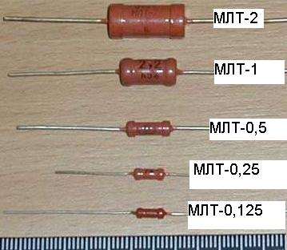
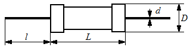
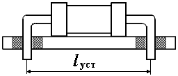
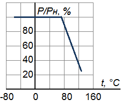

Резисторы МЛТ, ОМЛТ
Резисторы МЛТ постоянные металлопленочные лакированные теплостойкие. Металлодиэлектрические с металлоэлектрическим проводящим слоем неизолированные, для навесного монтажа. Предназначены для работы в электрических цепях постоянного, переменного и импульсного токов.
Резисторы неизолированные серии ОМЛТ (теплостойкие с повышенной механической прочностью, защищенные эмалью) с металлодиэлектрическим проводящим слоем предназначены для работы в цепях постоянного, переменного и импульсного тока. Способ монтажа - навесной.

Рис. 1 - Внешний вид резисторов МЛТ


Рис. 2 - Габаритные и установочные размеры резисторов МЛТ (табл. 1)
Таблица 1
| Номинальная мощность, Вт |
Диапазон номин. сопротивлений, Ом |
Размеры, мм | Масса, г, не более |
||||
|---|---|---|---|---|---|---|---|
| D | L | l | lуст | d | |||
| 0,125 | 8,2 ... 3·106 | 2,2 | 6,0 | 20 | 10 | 0,6 | 0,15 |
| 0,25 | 8,2 ... 5,1·106 | 3,0 | 7,0 | 20 | 12,5 | 0,6 | 0,25 |
| 0,5 | 1,0 ... 5,1·106 | 4,2 | 10,8 | 25 | 15 | 0,8 | 1,0 |
| 1 | 1,0 ... 10·106 | 6,6 | 13,0 | 25 | 20 | 0,8 | 2,0 |
| 2 | 1,0 ... 10·106 | 8,6 | 18,5 | 25 | 22,5 | 1,0 | 3,5 |
Значения (промежуточные) номинальных сопротивлений резисторов МЛТ соответствуют рядам Е24, Е96 с допусками ±2%, ±5%, ±10%.
Таблица 2
| Мощность, Вт | Напряжение, В |
|---|---|
| 0,125 | 200 В |
| 0,25 Вт | 250 В |
| 0,5 Вт | 350 В |
| 1 Вт | 500 В |
| 2 Вт | 750 В |

Рис. 3 - Зависимость допустимой мощности от температуры окружающей среды